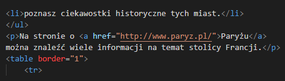

Ćwiczenie 7.
Dodajemy hiperłącze prowadzące do innej strony
1. Do tworzonej strony dodaj odsyłacz do strony o Paryżu.
2. Zapisz plik pod tą samą nazwą. Obejrzyj zaktualizowaną stronę w przeglądarce.
Funkcję hiperłącza może pełnić tekst, ale także obraz. W takim przypadku wewnątrz znaczników hiperłącza (<a> i </a>) należy wstawić znacznik obrazu. Można przygotować własny obraz (ikonę) i umieścić go na stronie w odpowiednich znacznikach. Na przykłąd zapis:
< a href="adres_strony_WWW><img src="ikona.jpg><a/> oznacza, że kliknięcie na stronie rysunku (zapisanego w pliku ikona.jpg) otworzy stronę, której adres podano jako wartość atrybutu href.

Przykład realizacji ćwiczenia 7. - fragment kodu źródłowego widoczny w oknie programu Visual Studio Code